O GUIA PARA TRANSFORMAR O SEU SONHO ITALIANO EM UM “SIM” REAL E POSSÍVEL.
Descubra o passo a passo de quem viveu essa experiência — e transforme o impossível em um “sim” memorável.
Planejamento completo, clareza nos documentos e inspiração real para viver o seu dia na Itália.
Compre seu guiaVocê vai sentir…
Uma jornada emocional e prática que transforma o caos do planejamento em clareza, confiança e magia.
Cenas reais. Emoções reais.
Talvez você esteja sonhando em casar na Itália, mas sem saber por onde começar. Eu já senti isso também — e descobri que, com clareza e direção, o impossível se torna real. Aperte o play para sentir o seu “sim” italiano ganhar vida.
O QUE VOCÊ VAI ENCONTRAR
A verdade é simples: você não precisa descobrir tudo sozinha. Com este guia em mãos, você corta meses de pesquisa, evita erros caros e ganha clareza absoluta sobre cada etapa do seu casamento na Itália.
Este não é apenas um ebook. É o atalho seguro para transformar seu sonho em um plano real e sem surpresas.
- Roteiro completo, atualizado e pronto para seguir Saiba exatamente o que fazer, quando fazer e o que evitar — sem adivinhação.
- Documentos, prazos e exigências explicados de forma direta Chega de informações confusas ou contraditórias. Aqui, tudo é organizado para você não correr riscos.
- Checklist editorial sofisticado Um checklist inteligente, elegante e funcional para garantir que nenhum detalhe escape.
- Recomendações reais de cidades e experiências Cenários, vibes, estilos e escolhas que combinam com diferentes perfis de noiva — sem achismos.
- Estratégias para economizar sem perder a magia Os segredos que ninguém conta: como casar com beleza, intenção e autenticidade dentro do seu orçamento.
BÔNUS INCLUSOS NO GUIA
- Planilha de Orçamento (€ ↔ R$)
- Modelo de Save The Date (editável)
- Checklist da Noiva + Documentos
- Cronograma de 12 meses
- Playlist “Sposi in Italia”
- Modelo de e-mail para fornecedores
A jornada até dizer “sim” na Itália
O caminho real — escolhas, imprevistos, encanto e a verdade de um casamento na Itália. Do primeiro mapa aberto na mesa aos passos finais rumo à Basílica de Assis, nossa jornada foi feita de pequenos gestos, descobertas, ajustes e encantamento.
Cada foto registra um capítulo real: a expectativa da viagem, a beleza do caminho, os bastidores do grande dia e a alegria de celebrar com quem amamos. Mais do que um álbum, este é o retrato vivo do que significa planejar — com verdade — um casamento na Itália.
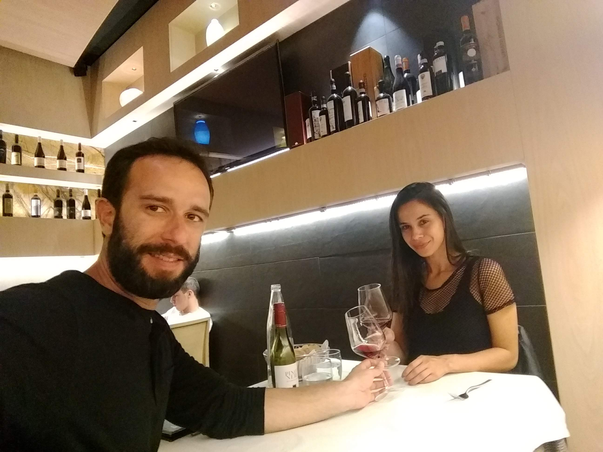
O primeiro passo
A ideia nasce — e o coração pulsa imaginando o “sim” italiano.
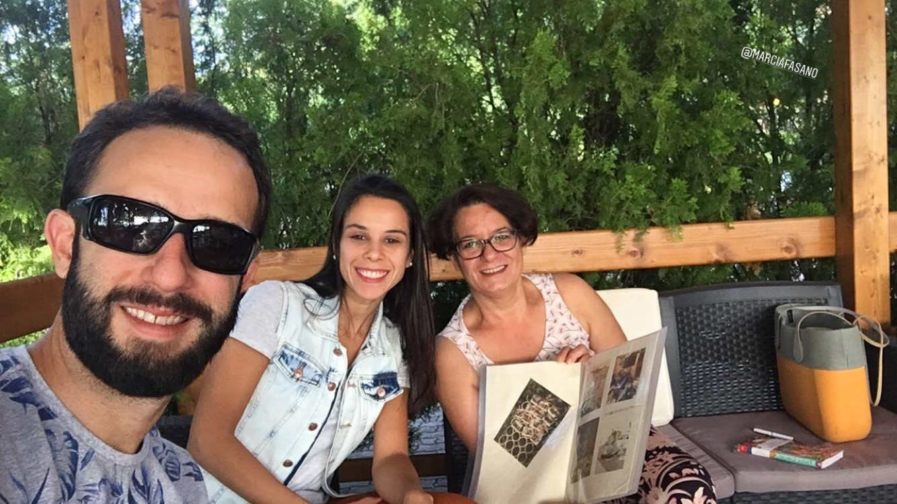
Escolhas e caminhos
Capelas, cidades, estilo — e o início da organização emocional e prática.
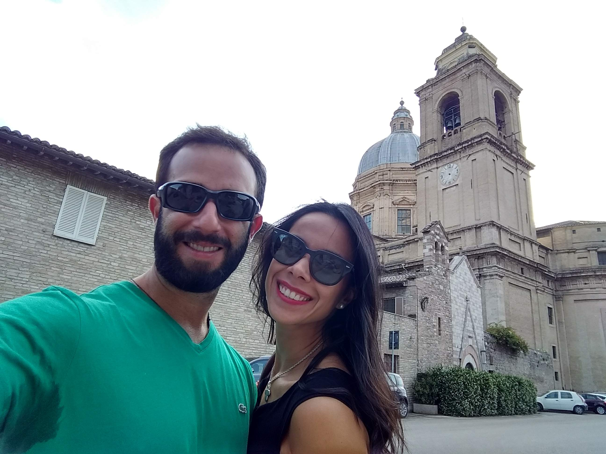
A chegada na Itália
A emoção de pisar em solo italiano e sentir o sonho ganhar forma.
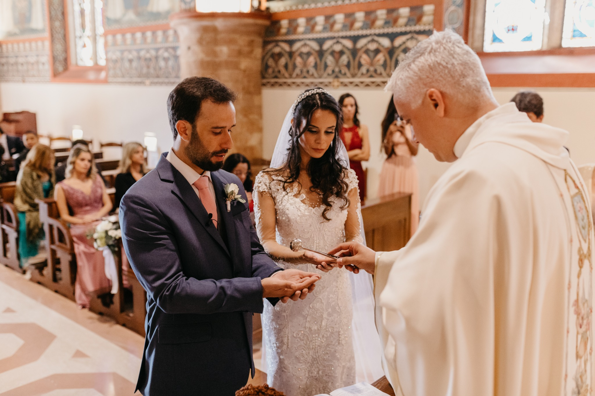
O dia perfeito
Flores, luz, vinhedo — e um “sim” que ecoa pela vida inteira.
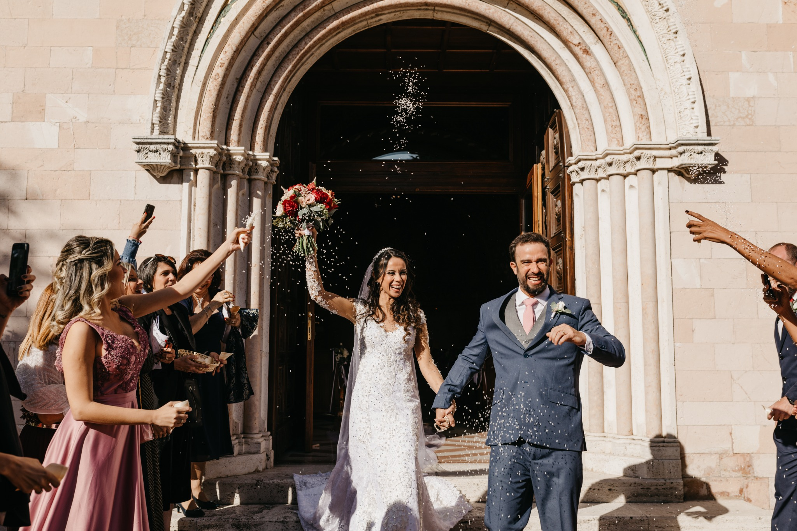
O início da nova vida
Entre vinhos, risos e a sensação de missão cumprida.
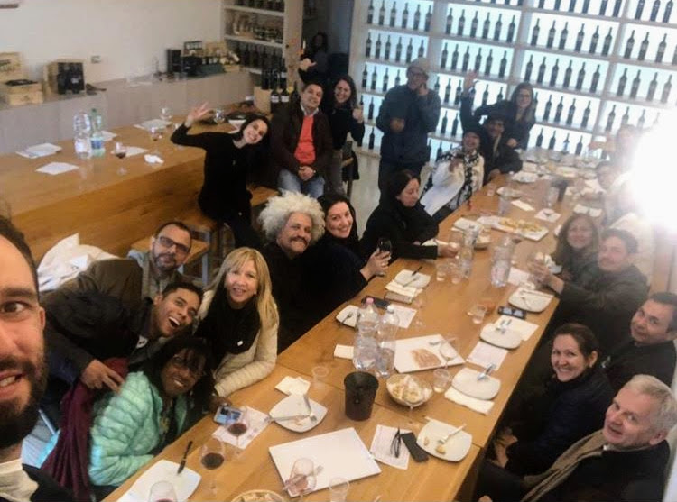
PASSEIO NO VINHEDO E DEGUSTAÇÃO
Vinhos, conversas e risadas que aqueceram a alma. Um momento especial com nossos convidados, leve e inesquecível.
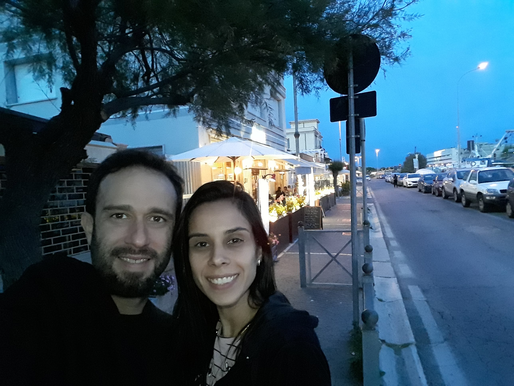
O DIA DA VIAGEM
A ansiedade gostosa de embarcar rumo ao sonho. Malas prontas, despedidas e o frio na barriga antes do “sim” italiano.
O QUE NINGUÉM CONTA SOBRE CASAR NA ITÁLIA
Uma verdade que só quem viveu sabe: casar na Itália é mágico, mas exige clareza, preparo e informações reais.
Aqui estão lições práticas que descobri vivendo cada etapa.
- Cada comune funciona de um jeito — e isso muda tudo.
- Fotos lindas não mostram a logística real do destino.
- Taxas variam muito entre cidades e regiões.
- Nem toda informação online está atualizada.
- É possível — mas não sozinho e não no escuro.
Para quem é — e para quem não é
Honestidade salva tempo — e te leva direto ao seu sonho com clareza.
✔ Este guia é para você se…
- Sonha com um casamento íntimo e cinematográfico na Itália.
- Quer clareza e direção para não se perder nos prazos.
- Busca economizar sem perder a magia.
- Deseja leveza e segurança em cada etapa.
✘ Não é para você se…
- Quer delegar tudo e não participar das escolhas.
- Busca algo rápido e sem envolvimento emocional.
- Não deseja um casamento com significado e propósito.
- Prefere passar horas na internet buscando informações desencontradas sobre casar na Itália, em vez de ter tudo organizado em um guia prático e atualizado.
Depoimentos
Como meu guia ajudou outras noivas a economizar, evitar erros e organizar um casamento na Itália com segurança. Histórias reais de noivas que transformaram o sonho de casar na Itália em um plano possível.
— Camila R. - Rio de Janeiro
— Patrícia M. - Belo Horizonte
— Renata e Lucas - Manaus (casamento em Roma, em 2025)
— Marina S. - São Paulo
— Juliana A. - São José dos Campos
— Bianca L. - Rio de Janeiro
O GUIA COMPLETO PARA REALIZAR O SEU CASAMENTO NA ITÁLIA POR APENAS:
12x de R$ 9,70
ou R$ 97 à vista
Por menos do que uma taça de vinho em Florença, você garante o guia completo que traz clareza, segurança e todo o passo a passo para dizer “sim” na Itália.
GARANTIR MEU GUIA CASAR NA ITÁLIAPacote completo — Da fé ao altar
Por que criamos a Coleção Casar na Itália
Cada guia da coleção nasceu do desejo de tornar acessível a experiência de casar em um dos lugares mais inspiradores do mundo. De forma prática, amorosa e real, a coleção ensina noivas a planejar o casamento dos sonhos com clareza, fé e propósito.
Quatro guias que se completam e criam uma jornada cinematográfica.
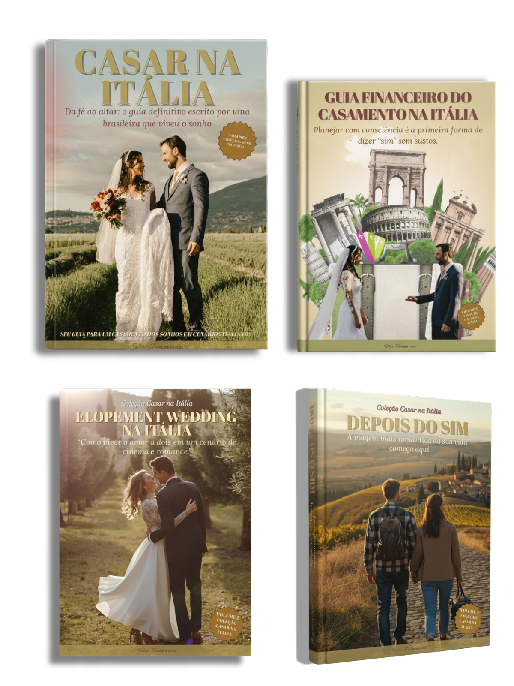
- ✔ Guia Casar na Itália — Definitivo
- ✔ Guia Financeiro
- ✔ Elopement Wedding
- ✔ Lua de Mel dos Sonhos
R$ 268,00
R$ 167,00
ou 12x de R$ 13,95
Bônus incluídos no pacote completo
- ✔ Checklist Editorial Premium
- ✔ Playlist Oficial “Casar na Itália”
- ✔ Mini Guia de Economias Inteligentes
- ✔ Lista de Cidades Cinematográficas
- ✔ Inspirações Reais
- ✔ Modelos de E-mail em 3 idiomas (PT/EN/IT)
QUEM É VÍVI TEMPERINE
A voz que transformou experiência real em método.
Vívi Temperine uniu sensibilidade e precisão para transformar sua própria jornada na Itália em um método claro, organizado e profundamente humano.
Brasileira, bisneta de italianos e apaixonada por casamentos de destino — e pelo país da tarantela — Vívi sempre sentiu uma ligação íntima com a cultura italiana.
Em 2019, ela viveu seu “sim” italiano em Assis, na Úmbria, em um Destination Wedding celebrado entre família e amigos. Uma experiência real, com mais de 30 convidados, que revelou tanto a beleza quanto os desafios de organizar um casamento fora do país.
Cada etapa — documentação, comune, logística, fornecedores, imprevistos — tornou-se aprendizado prático. E esses aprendizados, hoje, se transformam em orientação direta, segura e acessível para noivas que desejam realizar o mesmo sonho.
Com olhar atento e método cuidadoso, Vívi mostra que casar na Itália é possível. E mais do que isso: que esse sonho pode ser vivido com leveza, planejamento e verdade.
Cenas que inspiram o seu sonho
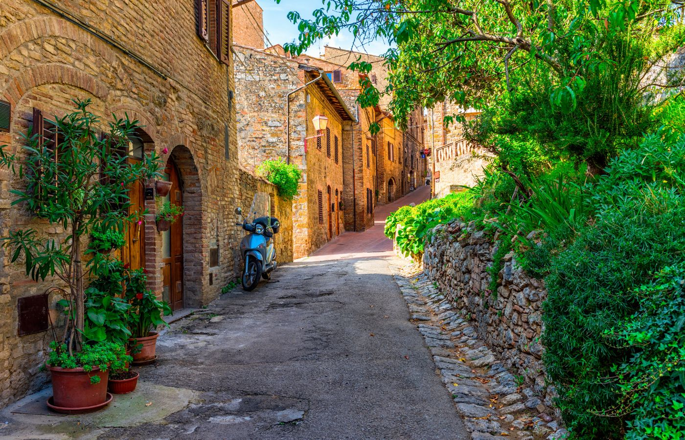
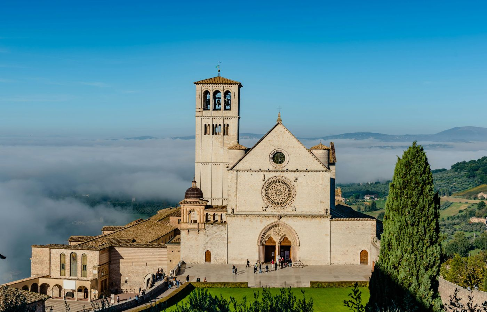
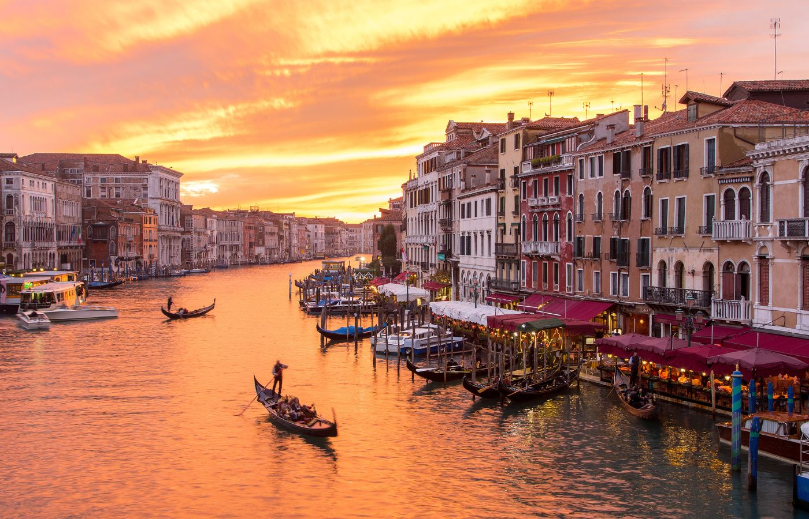
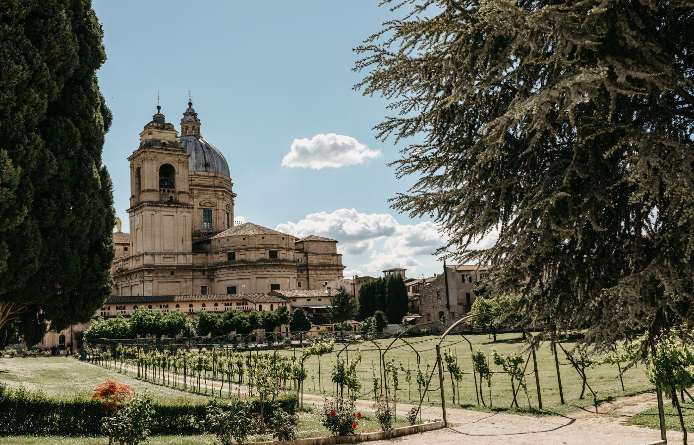
Garantia e Segurança
7 dias para testar — ou seu dinheiro de volta.
Compra 100% segura via Eduzz.
Por apenas R$97, você garante o guia completo com segurança total.
Quero viver essa experiênciaO Guia Casar na Itália por apenas R$ 97 — acesso imediato
Acesso imediato ao guia completo — direto no seu e-mail.
- ✔ 12x de R$ 9,74
- ✔ ou R$ 97 à vista
Perguntas Frequentes
Sim. O conteúdo explica regras gerais e diferenças entre regiões/comunes, para que você saiba exatamente o que confirmar em cada destino.
Não necessariamente. O guia entrega clareza para quem quer autonomia — com ou sem assessoria.
Sim. A seção documental vem completa: prazos, responsáveis, custos e cuidados essenciais.
Sim. Há explicação sobre diferenças entre cerimônias civis e religiosas.
Acesso vitalício — incluindo futuras atualizações.
Viva o seu sonho.
Um “sim” italiano começa com um passo — e este guia te dá a direção.